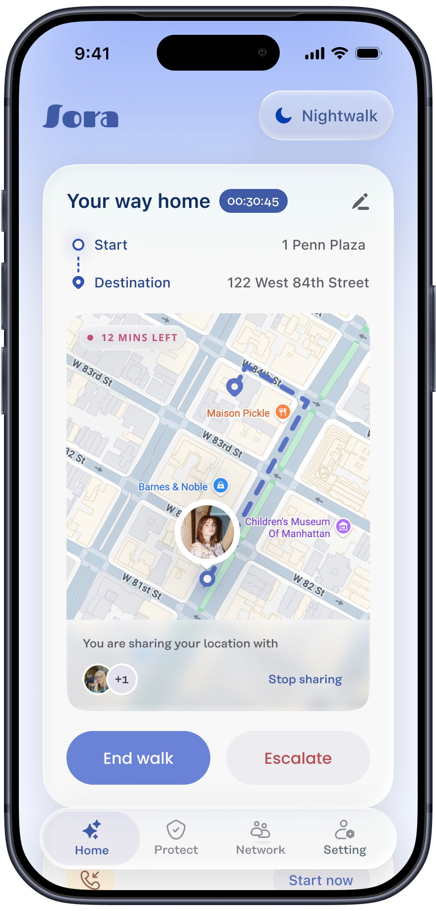
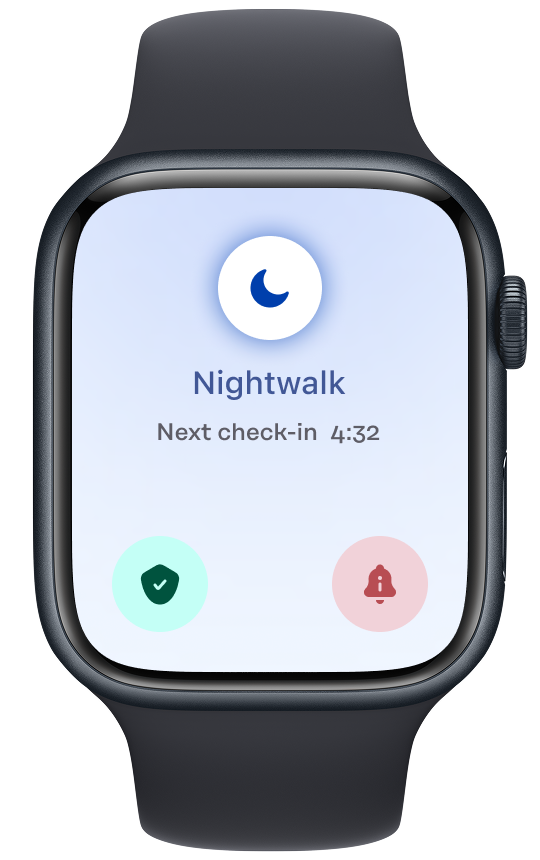

01 · Mode
Nightwalk
Arms every tool before she steps outside after dark. Safe word, fake call, timed check-in — ready before she reaches the door.
- Route mapped to a guardian's eye
- Voice-triggered safe word
- Auto check-in on arrival